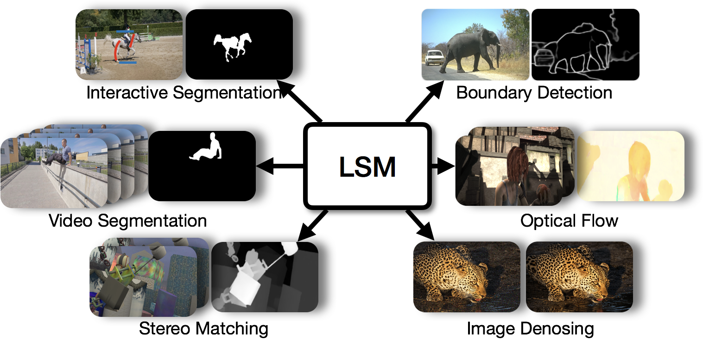
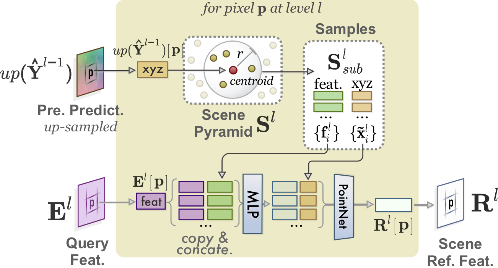

About
I am currently a final-year PhD student at Simon Fraser University, supervised by Prof. Ping Tan. My research interests are video stabilization, structure-from-motion & SLAM, and recently combining classic model based methods with deep learning. I had the the honor of working as research interns at Microsoft Research with Dr. Lu Yuan and at Adobe Research with Dr. Oliver Wang. Please refer to my CV for details, and I am a computer vision craftman who works on both deep learning and conventional methods.I'm looking for research scientist/engineer or postdoc positions.
Contact
chengzhou_tang@sfu.ca or chengzhout@gmail.com
Publications
|  |
LSM: Learning Subspace Minmization for Low-level Vision
In Submission, 2019
|
|  |
SANet: Scene Agnostic Network for Camera Localization
International Conference on Computer Vision (ICCV), 2019
|
 |
BA-Net: Dense Bundle Adjustment Networks
International Conference on Learning Representations (ICLR), Oral Presentation (1.7% acceptance rate),
2019
|
 |
Joint Direction and Stabilization for 360° Videos
ACM Transactions on Graphics (TOG), Presented at SIGGRAPH 2019
|
 |
GSLAM: Intialization-robust Monocular SLAM via Global Structure-from-Motion
International Conference on 3D Vision (3DV), 2017
|
 |
Linear Global Translation Estimation with Feature Tracks
British Machine Vision Conference (BMVC), 2015
|
 |
Local Subspace Video Stabilization
IEEE International Conference on Multimedia and Expo (ICME), 2014
|
 |
Sparse Moving Factorization for Subspace Video Stabilization
IEEE International Conference on Acoustics, Speech and Signal Processing (ICASSP), 2014
|
 |
Adaptive Motion Estimation Order for Frame Rate Up-conversion
IEEE International Symposium on Circuits and Systems (ISCAS), 2013
|
Services
- Review for International Journal of Computer Vision (IJCV)
- Review for IEEE Transactions on Image Processing (TIP)
- Review for Machine Vision Applications (MVAP)
- Review for Autonomous Robots (AUTON ROBOT)
- Review for International Conference on Learning Rrepresentation (ICLR)
- Review for IEEE Conference on Computer Vision and Pattern Recognition (CVPR)
- Review for International Conference on Computer Vision (ICCV)
- Review for European Conference on Computer Vision (ECCV)
- Review for Winter Conference on Applications of Computer Vision (WACV)
- Review for IEEE International Conference on Robotics and Automation (ICRA)
- Review for Pacific Graphics (PG)
- Review for ACM Symposium on Virtual Reality Software and Technology (VRST)
- Review for IEEE International Conference on Virtual Reality and 3D User Interfaces (IEEE VR)
- PC Member for AAAI Conference on Artificial Intelligence (AAAI) 2020